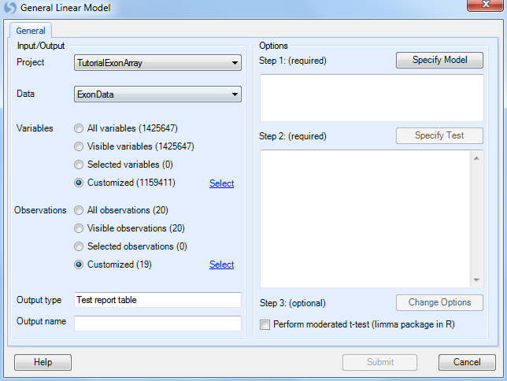
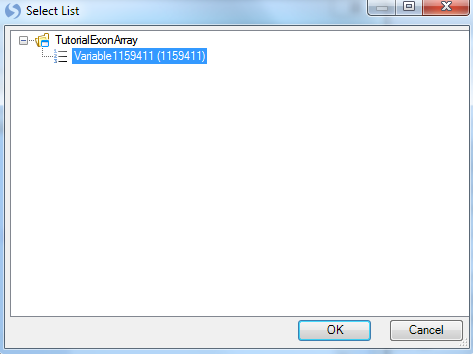
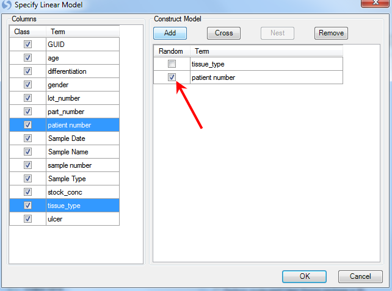
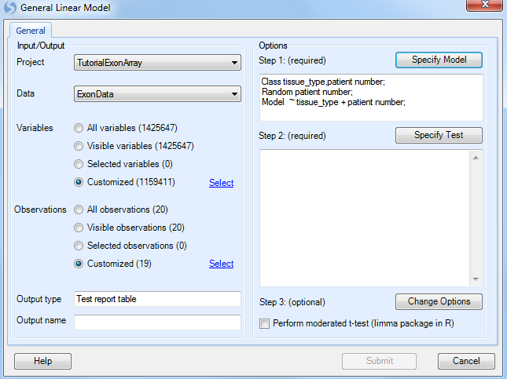
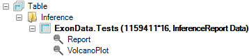
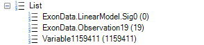
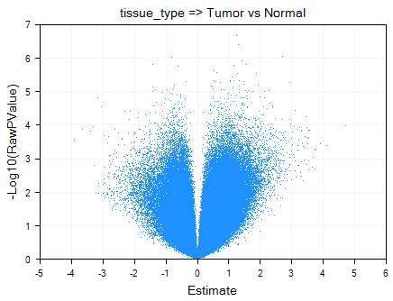

Differential Expression (Probeset Level)¶
Array Studio contains a number of different modules for performing univariate analysis/differential expression on the probeset level, including One-Way ANOVA, Two-Way ANOVA, and the more advanced General Linear Model, as well as a few others. For probeset level, the differential expression analysis is similar to that discussed in MicroArray Tutorial. We will only provide an example of General Linear Model in this tutorial.
Probeset Level Linear Model¶
The design of the experiment in this tutorial is set-up so that the user should perform a Probeset Level Linear Model. The first factor in the ANOVA is tissue_type while the second factor is patient_id. For each patient, there is a tumor and a normal sample, and we are interested in the difference between the two.
To run the Probeset Level Linear Module, go to the Statistical Inference section of the workflow, and select Probeset Level Linear model. Alternatively, the same module can be selected by going to the MicroArray Menu | Inference | General Linear Model.

This opens the General Linear Model window.

As with other analysis windows, the user must first set the Project and Data on which to run the analysis, in the Input/Output section. Make sure Tutorial ExonArray is chosen as the project and Exon Data is chosen as the input data.
For Variables, choose Customized variables and click Select. Choose the list that was generated earlier by the Filter command.

For Observations, choose Customized Observations, and then click the Select button to choose the list ExonData.Observation19. This ensures that the statistical tests are only run on the good 19 observations, ignoring the one outlier chip.

Go to Step 1: Specify Model.
The two factors in this model are tissue_type and patient number. Use ctrl + click to select both of them and click the Add button.

Patient is random effect, so click the Random checkbox for patient number. Click OK to return to the General Linear Model window. Notice that the information of the specified model is displayed in the box under step 1.

Next, click Specify Test for comparisons.
This opens the Specify Test window, which allows the user to manually or automatically specify the tests (or comparisons). In this case, the user is interested in the difference between tumor samples and normal.

The easiest way to specify the comparison is to ensure that the Term box is set to tissue_type, click the For each box to set to (none), and set Compare to as Normal. In effect, this says that for every level of tissue_type, compare it to normal. Since there are only two levels (tumor and normal), there will be one comparison.
Make sure that Estimate, Fold Change, Raw p-values and Adjusted p-values are checked, and then click Add to add the test. Add test will be displayed in the TTests box.
Click OK to return to the original General Linear Model window.

Step 3 is optional, and includes a number of options that can be set for the General Linear Model. Please refer to MicroArray Tutorial for more details on the options.
The Linear Model option is now complete. If the user is familiar with SAS code, clicking Show SAS Code will show the equivalent SAS code.
Click Submit to run the module.
This module should take approximately 6 minutes (Note: the length of time is dependent on the number of variables in this case over 1 million, as well as the type of model).
The Volcano Plot View and Inference Report¶
After running the General Linear Model (the computing time should be a few minutes), a Table is generated under the Inference tab of the Solution Explorer, named ExonData.Tests. This table contains the statistics report generated by the General Linear Model, together with a VolcanoPlot visualizing the pvalues vs. estimate.

Also notice that a new List has been automatically generated by the General Linear Model. This List can be used for purposes of filtering, and any other downstream analysis. However, for this experiment, there are actually no probesets that pass the adjusted p-value criteria of 0.05, so this list contains 0 probesets.

Double click on VolcanoPlot to open it. Notice that one volcano plot has been created in this view, for the comparison Tumor vs. Normal.

The VolcanoPlotView shows the -Log10 (Raw P-value) on the y-axis and the Estimate (Estimate is defined as the statistically adjusted difference between the means of the two groups being compared) on the x-axis. Thus, the most significant probesets are higher on the y-axis, while the mostly differentially expressed probesets can be found at the extremes of the x-axis. Similar to all views in Array Studio, the VolcanoPlotView is fully interactive. Please refer to MicroArray Tutorial for more details on these options.